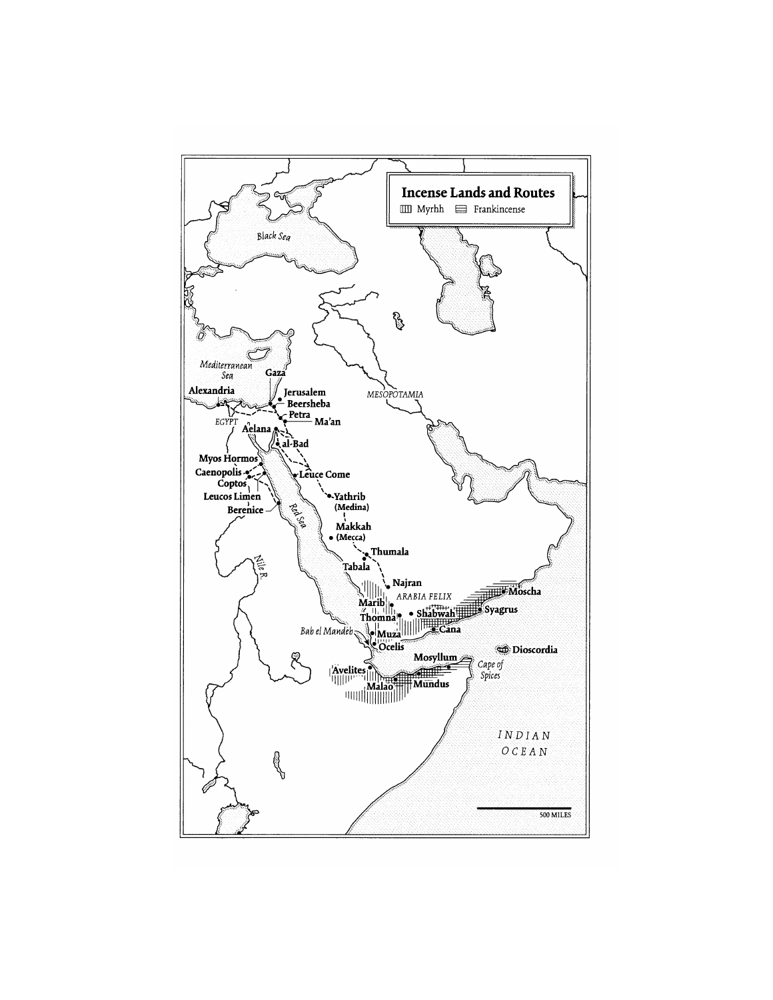

Explain trade, protection and historical commercial networks
Useful first: Distinguish hold-up from commitment and reason through sunk costs, Explain liberty, Leviathans and the cage of norms
Lesson outline
- 02IntroductionSee the main question, learning objectives and prerequisites.
- 03Key definitions and conceptsGet familiar with the important terms and notation.
- 04Trade, protection and historical IslamSource: Source:
- 05Worked exampleFollow a complete application of the reasoning.
- 06Practise the reasoningWork through written tasks, with optional support and solutions.
- 07Check your reasoning: an offline quizCheck your choices and see feedback without a connection.
- 08Check your understandingReview the key distinctions and check what you can explain.
- 09Test yourself laterTry another prepared question before rereading.
- 10SourcesFind the materials and limits behind the lesson.
Introduction
In this lesson, explain trade, protection and historical commercial networks.
2.1 What you’ll learn
- Compare a declared route-cost example and trace Bernstein’s logistics/protection narrative without timeless religious or causal overclaims.
2.2 Before you begin
- Distinguish hold-up from commitment and reason through sunk costs
- Explain liberty, Leviathans and the cage of norms
Check the foundations
Why can trade
Reveal foundation explanation
O004 shows sequential commitment can stop exchange; O014 distinguishes protection/capacity from freedom under arbitrary domination.
Key definitions and concepts
- Protection cost: Expenditure or tribute affecting route security in the stated model.
- Expected loss: A probability-weighted loss, distinct from a guaranteed realized outcome.
- Historical commercial instrument: A source-attributed transfer/partnership arrangement, not proof of modern invention lineage.
Trade, protection and historical Islam
Source: Source:
Bernstein’s supplied additional excerpt supplies historical context for the lecture’s links between commerce, political protection and Islam. It is interpretive background rather than a timeless account of religious conduct.

4.1 Trade infrastructure before Islam
Bernstein’s chapter begins with the camel as a transport technology that made long-distance exchange across arid regions practicable. The camel’s evolutionary adaptation to dry climates, its domestication, capacity to carry heavy loads, and development of specialized saddles together made it more useful than a donkey for bulk transport across trackless desert.
The account contrasts dromedaries, Bactrians, and strong first-generation hybrids used along routes linking the Middle East and Central Asia. It emphasizes that trade capacity depended on animal biology, breeding, equipment, water access, and terrain rather than on distance alone: caravanserais and oases constrained routes, while steep mountain passes still required donkeys.
The Arabian incense trade illustrates how a valuable export can support a long supply chain. Frankincense and myrrh from the relatively fertile southwest of Arabia and neighboring Somalia served ritual, medicinal, cosmetic, and other uses in ancient markets.
Harvest season and monsoon timing affected the choice between camel caravans and sea transport. The text describes local production, protective packaging, caravan services, intermediary markets, transit charges, and destination demand as linked stages in the trade.
It also presents evidence of organized market exchange: the “silent trade” described by Theophrastus, in which sellers left measured goods and marked prices for merchants, with a priest taking a stated share.
Geography, political control, and transaction costs shaped the commodity’s route. The account traces incense through Shabwah and Thomna toward Gaza and Mediterranean markets, describing tolls, gate control, guards, water, fodder, lodging, and protection payments.
It contrasts relatively trusting transactions at the production end with costly controls and theft prevention at processing and consumer centers. Under Roman rule, some routes became safer and cheaper, while demand and cultivation patterns changed.
The author estimates large trade volumes and compares costs, prices, wages, and revenues using ancient monetary units. These are the author’s reported historical calculations, not contemporary values or independently updated estimates.
4.2 The political problem of exchange
Bernstein frames the desert economy through a “trade, protect, or raid” trilemma: where enforceable authority is absent, a trader must secure a route and cargo, or risk predation. In his account, family and tribal ties supplied protection in a setting with weak central authority.
Collective responsibility and retaliatory violence could deter attacks, but also perpetuate cycles of revenge and insecurity. Raiding, called ghazu, could become an economic strategy when no authority beyond the tribe protected trade.
This is the author’s broad explanatory frame, not a universal law of desert societies or an adequate description of present-day Muslim societies.
Mecca’s rise as a commercial center is presented as uncertain. The text notes competing explanations: its relative position between larger powers, the possibility that the principal incense route bypassed it, its dependence on agricultural production at Taif, and the commercial and pilgrimage activity surrounding the Kaaba and nearby shrines.
Bernstein describes Quraish leaders as making trade safer and more profitable by taxing merchants and selling safe conduct, shifting incentives away from raiding. This links political organization to the provision of protection and to the growth of exchange.
Keep the uncertainty explicit: the source does not establish that Mecca sat on the main incense route or that incense alone caused its prosperity.
4.3 Muhammad, early Islam, and commercial norms
Bernstein situates Islam’s emergence in a changing commercial and political setting. His narrative presents Muhammad as having merchant experience, including work for Khadija’s trading enterprise, and stresses that Islamic texts and traditions contain guidance on consensual exchange, truthful disclosure of defects, and fair dealing.
The author connects these commercial norms to the religious community’s institutional unity. The historical details about Muhammad’s early life are qualified in the source: it says the surviving written biographies appeared more than a century after his death and that the historical record is uncertain.
Treat the chapter as a historical interpretation, not as a settled account of Islamic doctrine or as a religious authority.
The account of early expansion combines religious conversion, military conquest, and economic redistribution. Bernstein describes raids on caravans after the migration from Mecca to Medina, the treatment of conquered property, and the allocation of a share to the community and the remainder to participants.
He argues that conversion and conquest together expanded the boundaries of the new polity. This passage is the author’s interpretation and is phrased in sweeping terms, including claims about relations with nonbelievers;
it should not be turned into a timeless rule about Islam or Muslims. The text itself notes peaceful conversion as a distinct route of expansion.
4.4 Political consolidation and commercial networks
The early caliphates are shown as both political powers and organizers of routes and supplies. The text describes efforts to move Egyptian grain to Arabia, including a Nile–Red Sea canal project and the strategic decision not to extend it to the Mediterranean.
It recounts the Battle of the Masts in 655, the subsequent growth of Muslim naval control, and expansion into North Africa, Spain, Mediterranean islands, and Central Asia. These events connect trade to food security, naval capacity, and control over ports and sea lanes.
A source-based map of incense lands and routes appears earlier in the chapter; a second teaching diagram could map the Red Sea, Persian Gulf, and Silk Road as an integrated network under the early caliphates.
Bernstein characterizes the Umayyad and Abbasid domains as a large commercial zone in which barriers were reduced and the Red Sea, Persian Gulf, and Silk Road functioned as connected routes. He associates this network with Muslim seafaring, Arabic as a lingua franca, long-distance connections to China, Scandinavia, and sub-Saharan Africa, and the movement of goods such as gold, ivory, furs, amber, silk, pepper, and metalwork.
He also notes an intellectual and cultural flourishing centered in cities including Damascus, Baghdad, and Cordova. The account does not imply that political unity produced frictionless trade or equal access for all populations.
It explicitly says that the “Pax Islamica” was not an unmixed blessing: the Mediterranean could become a frontier of conflict, and the source describes a shift in the boundaries between Occident and Orient.
The closing pages note a distinction between sophisticated commercial practices and state financial institutions: Bernstein says Muslim commercial networks used bills of exchange, lending arrangements, and futures markets, while no Islamic state established a national or central bank. He then traces later challenges to the commercial order, including Christian reconquest, Crusades, Mongol invasions, plague, and European entry into the Indian Ocean, while noting that Muslim traders remained important in long-distance trade into the early modern period.
This is a historical narrative of changing routes and political conditions, not a claim that one factor alone explains later economic outcomes.
Interpretive cautions. The chapter uses a vivid, sometimes polemical narrative voice and offers broad claims about tribal life, raiding, religious motivation, conquest, and economic decline. Present these as Bernstein’s explanatory propositions, preserve qualifications and contested points, and do not generalize them to all Muslim societies or the present.
The text itself calls Mecca’s commercial importance and route position uncertain. Historical quotations and numerical estimates (including camel capacities, population counts, trade volumes, prices, wages, and silver outflows) are source-period claims;
retain their attribution and dates rather than presenting them as current or independently verified. The chapter excerpt ends mid-book and contains no end-of-chapter discussion questions.

The supplied incense-route map locates production areas, caravan routes and maritime alternatives. Read it alongside the chapter’s explicit uncertainty about whether the principal route passed Mecca.

The Week III map depicts the medieval trade network. The associated three-route argument links the Red Sea, Persian Gulf and Silk Road; a map of connections alone does not measure trade volumes or prove a single cause of later decline.
4.5 Commercial instruments in the lecture
The lecture adds historical terms from Irfan (2015): suftaja as a transferable money order, hawala as a credit/transfer arrangement, sakk as an early cheque-like written instruction, musharaka as partnership and mudarabah as capital–management profit sharing. The lecture relates these instruments to extensive trading networks and later financial practices.
Its genealogy is a reported historical interpretation; the supplied chapter does not establish an exact one-to-one invention lineage for every modern instrument.
Distinguish that history from the contract mechanisms explained in Islamic finance and institutional diversity.
Worked example
Prompt: A hypothetical caravan has gross trading margin 100, logistics cost 20, a safe-conduct fee 10, or an expected predation loss 30 if unprotected; other costs are equal and the supplied fee is assumed to eliminate that particular loss.
Compare expected net margins, keeping expectations distinct from guaranteed outcomes. Use Bernstein’s transport and incense-chain mechanisms, trade/protect/raid framework, Mecca uncertainty, early commercial norms, political consolidation/routes and later disruptions.
Distinguish attributed narrative from timeless religious claims and historical suftaja/hawala/sakk/musharaka/mudarabah from a proven invention lineage.
Solution: Protected expected margin is \(100-20-10=70\); unprotected expected margin is \(100-20-30=50\).
The supplied expected comparison favours protection by \(20\), conditional on its effectiveness and costs; it is not proof every voyage profits or a historical estimate.
Camel biology/domestication/saddles, terrain, oases and caravanserais affect transport; mountains can still require donkeys.
Incense production, packaging, monsoon/harvest timing, intermediary markets, tolls and protection jointly determine routes/costs. Trade, protection or raiding depend on enforcement and incentives;
kin protection can deter attacks yet sustain revenge. Mecca’s route position and commercial importance are explicitly uncertain;
do not assert the main incense route passed through it. Muhammad’s merchant/fair-dealing narrative relies on later/uncertain biographical evidence and is the author’s interpretation, not religious authority.
Expansion includes conversion, conquest and redistribution, not one timeless Muslim motive. Caliphate supply, naval control and the Red Sea/Persian Gulf/Silk Road connections can reduce barriers without frictionless or equal access;
later reconquest, Crusades, Mongols, plague and European entry are multiple developments, not a one-factor decline proof. Historical suftaja money orders, hawala credit/transfers, sakk cheque-like instructions, musharaka partnership and mudarabah capital-management sharing are lecture terminology, not exact modern invention lineages.
Maps show connections, not volumes/causal effects; all monetary/capacity estimates and broad claims retain historical attribution.
Practise the reasoning
Write your reasoning before revealing an explanation. Begin with support, then apply the ideas to another situation.
6.1 Written exercise 1
A hypothetical caravan has gross trading margin 120, logistics cost 25, a safe-conduct fee 15, or an expected predation loss 40 if unprotected;
Solve the following:
- other costs are equal and the supplied fee is assumed to eliminate that particular loss.
- Compare expected net margins, keeping expectations distinct from guaranteed outcomes.
- Use Bernstein’s transport and incense-chain mechanisms, trade/protect/raid framework, Mecca uncertainty, early commercial norms, political consolidation/routes and later disruptions.
- Distinguish attributed narrative from timeless religious claims and historical suftaja/hawala/sakk/musharaka/mudarabah from a proven invention lineage.
Show a hint
Pause before calculating or choosing an explanation:
- What quantities, actors or outcomes are being compared? Write their roles, units and dates beside them.
- Which condition decides whether the relationship applies? Check the relevant definition before using a formula or classifying the case.
- What would have to remain fixed for your comparison to be meaningful? Work through one link in the reasoning at a time.
- How could you check the direction, boundary case or alternative explanation before stating your conclusion?
A local draft for your own study.
Reveal explanation
Solution: Protected expected margin is \(120-25-15=80\); unprotected expected margin is \(120-25-40=55\).
The supplied expected comparison favours protection by \(25\), conditional on its effectiveness and costs; it is not proof every voyage profits or a historical estimate.
Camel biology/domestication/saddles, terrain, oases and caravanserais affect transport; mountains can still require donkeys.
Incense production, packaging, monsoon/harvest timing, intermediary markets, tolls and protection jointly determine routes/costs. Trade, protection or raiding depend on enforcement and incentives;
kin protection can deter attacks yet sustain revenge. Mecca’s route position and commercial importance are explicitly uncertain;
do not assert the main incense route passed through it. Muhammad’s merchant/fair-dealing narrative relies on later/uncertain biographical evidence and is the author’s interpretation, not religious authority.
Expansion includes conversion, conquest and redistribution, not one timeless Muslim motive. Caliphate supply, naval control and the Red Sea/Persian Gulf/Silk Road connections can reduce barriers without frictionless or equal access;
later reconquest, Crusades, Mongols, plague and European entry are multiple developments, not a one-factor decline proof. Historical suftaja money orders, hawala credit/transfers, sakk cheque-like instructions, musharaka partnership and mudarabah capital-management sharing are lecture terminology, not exact modern invention lineages.
Maps show connections, not volumes/causal effects; all monetary/capacity estimates and broad claims retain historical attribution.
6.2 Written exercise 2
A hypothetical caravan has gross trading margin 90, logistics cost 15, a safe-conduct fee 10, or an expected predation loss 25 if unprotected;
Solve the following:
- other costs are equal and the supplied fee is assumed to eliminate that particular loss.
- Compare expected net margins, keeping expectations distinct from guaranteed outcomes.
- Use Bernstein’s transport and incense-chain mechanisms, trade/protect/raid framework, Mecca uncertainty, early commercial norms, political consolidation/routes and later disruptions.
- Distinguish attributed narrative from timeless religious claims and historical suftaja/hawala/sakk/musharaka/mudarabah from a proven invention lineage.
A local draft for your own study.
Reveal explanation
Solution: Protected expected margin is \(90-15-10=65\); unprotected expected margin is \(90-15-25=50\).
The supplied expected comparison favours protection by \(15\), conditional on its effectiveness and costs; it is not proof every voyage profits or a historical estimate.
Camel biology/domestication/saddles, terrain, oases and caravanserais affect transport; mountains can still require donkeys.
Incense production, packaging, monsoon/harvest timing, intermediary markets, tolls and protection jointly determine routes/costs. Trade, protection or raiding depend on enforcement and incentives;
kin protection can deter attacks yet sustain revenge. Mecca’s route position and commercial importance are explicitly uncertain;
do not assert the main incense route passed through it. Muhammad’s merchant/fair-dealing narrative relies on later/uncertain biographical evidence and is the author’s interpretation, not religious authority.
Expansion includes conversion, conquest and redistribution, not one timeless Muslim motive. Caliphate supply, naval control and the Red Sea/Persian Gulf/Silk Road connections can reduce barriers without frictionless or equal access;
later reconquest, Crusades, Mongols, plague and European entry are multiple developments, not a one-factor decline proof. Historical suftaja money orders, hawala credit/transfers, sakk cheque-like instructions, musharaka partnership and mudarabah capital-management sharing are lecture terminology, not exact modern invention lineages.
Maps show connections, not volumes/causal effects; all monetary/capacity estimates and broad claims retain historical attribution.
6.3 Written exercise 3
A hypothetical caravan has gross trading margin 150, logistics cost 30, a safe-conduct fee 20, or an expected predation loss 50 if unprotected;
Solve the following:
- other costs are equal and the supplied fee is assumed to eliminate that particular loss.
- Compare expected net margins, keeping expectations distinct from guaranteed outcomes.
- Use Bernstein’s transport and incense-chain mechanisms, trade/protect/raid framework, Mecca uncertainty, early commercial norms, political consolidation/routes and later disruptions.
- Distinguish attributed narrative from timeless religious claims and historical suftaja/hawala/sakk/musharaka/mudarabah from a proven invention lineage.
A local draft for your own study.
Reveal explanation
Solution: Protected expected margin is \(150-30-20=100\); unprotected expected margin is \(150-30-50=70\).
The supplied expected comparison favours protection by \(30\), conditional on its effectiveness and costs; it is not proof every voyage profits or a historical estimate.
Camel biology/domestication/saddles, terrain, oases and caravanserais affect transport; mountains can still require donkeys.
Incense production, packaging, monsoon/harvest timing, intermediary markets, tolls and protection jointly determine routes/costs. Trade, protection or raiding depend on enforcement and incentives;
kin protection can deter attacks yet sustain revenge. Mecca’s route position and commercial importance are explicitly uncertain;
do not assert the main incense route passed through it. Muhammad’s merchant/fair-dealing narrative relies on later/uncertain biographical evidence and is the author’s interpretation, not religious authority.
Expansion includes conversion, conquest and redistribution, not one timeless Muslim motive. Caliphate supply, naval control and the Red Sea/Persian Gulf/Silk Road connections can reduce barriers without frictionless or equal access;
later reconquest, Crusades, Mongols, plague and European entry are multiple developments, not a one-factor decline proof. Historical suftaja money orders, hawala credit/transfers, sakk cheque-like instructions, musharaka partnership and mudarabah capital-management sharing are lecture terminology, not exact modern invention lineages.
Maps show connections, not volumes/causal effects; all monetary/capacity estimates and broad claims retain historical attribution.
6.4 Another chance to practise
Use the situation and assumptions below.
Solve the following:
- Does a medieval route map prove trade volume, Mecca’s exact route position or the cause of later decline?
A local draft for your own study.
Reveal explanation
No. It locates connections. The account qualifies Mecca and discusses multiple mechanisms; volumes and causal effects need further evidence.
Check your reasoning: an offline quiz
Choose one answer per question. Check individual answers or check the whole quiz. Each option includes feedback on the reasoning, and everything works offline.
Reveal explanation
Subtract both specified protected-case costs.
Reveal explanation
Compare 70 against 50 without promoting the illustration to a historical estimate.
Reveal explanation
Preserve uncertainty, historical attribution and the distinction between connections and measured effects.
Check your understanding
- Compare a declared route-cost example and trace Bernstein’s logistics/protection narrative without timeless religious or causal overclaims.
Test yourself later
Return to these questions after a break, before rereading the explanation. Use a question you have not just viewed.
9.1 Review question 1
A hypothetical caravan has gross trading margin 80, logistics cost 10, a safe-conduct fee 5, or an expected predation loss 20 if unprotected;
Solve the following:
- other costs are equal and the supplied fee is assumed to eliminate that particular loss.
- Compare expected net margins, keeping expectations distinct from guaranteed outcomes.
- Use Bernstein’s transport and incense-chain mechanisms, trade/protect/raid framework, Mecca uncertainty, early commercial norms, political consolidation/routes and later disruptions.
- Distinguish attributed narrative from timeless religious claims and historical suftaja/hawala/sakk/musharaka/mudarabah from a proven invention lineage.
A local draft for your own study.
Reveal explanation
Solution: Protected expected margin is \(80-10-5=65\); unprotected expected margin is \(80-10-20=50\).
The supplied expected comparison favours protection by \(15\), conditional on its effectiveness and costs; it is not proof every voyage profits or a historical estimate.
Camel biology/domestication/saddles, terrain, oases and caravanserais affect transport; mountains can still require donkeys.
Incense production, packaging, monsoon/harvest timing, intermediary markets, tolls and protection jointly determine routes/costs. Trade, protection or raiding depend on enforcement and incentives;
kin protection can deter attacks yet sustain revenge. Mecca’s route position and commercial importance are explicitly uncertain;
do not assert the main incense route passed through it. Muhammad’s merchant/fair-dealing narrative relies on later/uncertain biographical evidence and is the author’s interpretation, not religious authority.
Expansion includes conversion, conquest and redistribution, not one timeless Muslim motive. Caliphate supply, naval control and the Red Sea/Persian Gulf/Silk Road connections can reduce barriers without frictionless or equal access;
later reconquest, Crusades, Mongols, plague and European entry are multiple developments, not a one-factor decline proof. Historical suftaja money orders, hawala credit/transfers, sakk cheque-like instructions, musharaka partnership and mudarabah capital-management sharing are lecture terminology, not exact modern invention lineages.
Maps show connections, not volumes/causal effects; all monetary/capacity estimates and broad claims retain historical attribution.
9.2 Review question 2
A hypothetical caravan has gross trading margin 200, logistics cost 40, a safe-conduct fee 25, or an expected predation loss 60 if unprotected;
Solve the following:
- other costs are equal and the supplied fee is assumed to eliminate that particular loss.
- Compare expected net margins, keeping expectations distinct from guaranteed outcomes.
- Use Bernstein’s transport and incense-chain mechanisms, trade/protect/raid framework, Mecca uncertainty, early commercial norms, political consolidation/routes and later disruptions.
- Distinguish attributed narrative from timeless religious claims and historical suftaja/hawala/sakk/musharaka/mudarabah from a proven invention lineage.
A local draft for your own study.
Reveal explanation
Solution: Protected expected margin is \(200-40-25=135\); unprotected expected margin is \(200-40-60=100\).
The supplied expected comparison favours protection by \(35\), conditional on its effectiveness and costs; it is not proof every voyage profits or a historical estimate.
Camel biology/domestication/saddles, terrain, oases and caravanserais affect transport; mountains can still require donkeys.
Incense production, packaging, monsoon/harvest timing, intermediary markets, tolls and protection jointly determine routes/costs. Trade, protection or raiding depend on enforcement and incentives;
kin protection can deter attacks yet sustain revenge. Mecca’s route position and commercial importance are explicitly uncertain;
do not assert the main incense route passed through it. Muhammad’s merchant/fair-dealing narrative relies on later/uncertain biographical evidence and is the author’s interpretation, not religious authority.
Expansion includes conversion, conquest and redistribution, not one timeless Muslim motive. Caliphate supply, naval control and the Red Sea/Persian Gulf/Silk Road connections can reduce barriers without frictionless or equal access;
later reconquest, Crusades, Mongols, plague and European entry are multiple developments, not a one-factor decline proof. Historical suftaja money orders, hawala credit/transfers, sakk cheque-like instructions, musharaka partnership and mudarabah capital-management sharing are lecture terminology, not exact modern invention lineages.
Maps show connections, not volumes/causal effects; all monetary/capacity estimates and broad claims retain historical attribution.
Sources
Show materials and lesson scope
- ADDITIONAL - Bernstein - chapter 3
- Week III - lecture - large slides
- Trade infrastructure before Islam
- The political problem of exchange
- Muhammad, early Islam, and commercial norms
- Political consolidation and commercial networks
- Commercial instruments in the lecture
- Bernstein, supplied chapter 3, physical PDF pp. 1–5
- Bernstein, supplied chapter 3, physical PDF pp. 5–12
- Bernstein, supplied chapter 3, physical PDF pp. 8–14
- Bernstein, supplied chapter 3, physical PDF pp. 14–15
- Bernstein, supplied chapter 3, physical PDF pp. 15–16
- Bernstein, supplied chapter 3, physical PDF pp. 16–19
- Bernstein, supplied chapter 3, physical PDF pp. 19–20
- Bernstein, supplied chapter 3, physical PDF pp. 20–22
- Bernstein, supplied chapter 3, physical PDF pp. 22–23
- Bernstein, supplied chapter 3, physical PDF pp. 23
- Bernstein, supplied chapter 3, physical PDF pp. 1–23
- Bernstein, supplied chapter 3, physical PDF pp. 10
- Week III lecture, physical PDF pp. 31
- Week III lecture, physical PDF pp. 28–34
Numerical and contextual illustrations are hypothetical unless explicitly described as a reported result. Historical data, model assumptions and unresolved source differences retain their stated limits.
These exercises are for self-study. Viewing a prepared item or solution may make that item unsuitable as a fresh check in a tutor chat. This page does not record an assessed learning result.